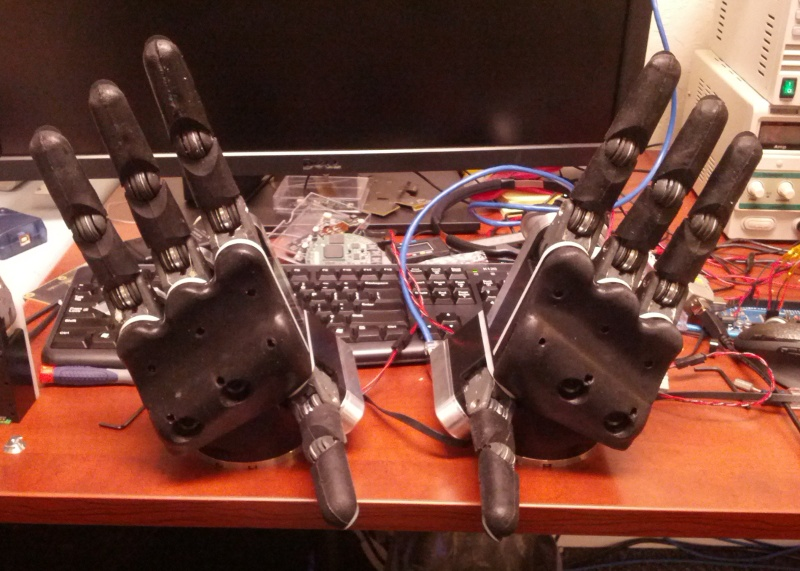

Homing Sequence
The fingers must start in their "home" or "fully-outstretched" position before power-up. At time of writing, the recommended method for homing the hand is to manually (and gently!) move the fingers into their home position with all fingers powered off. Note that due to the intrinsic properties of the low-cost planetary gear reductions used in the fingers, sometimes they will bind when backdriven. This can almost always be resolved by working the finger forwards and backwards a bit around the joint that feels stuck. Never push with extreme force against a finger that feels stuck, as it may lead to extreme badness.
The finger links should be perfectly inline with the shiny aluminum caps at the base of each finger module. It usually takes a few gentle back-and-forth motions on each joint to do this. Due to the coupling of the joints, it is easiest to start with the abduction/adduction joint (the first and smallest one) on each finger, center that joint, then move to the next link, center it, and finally center the last link (distal-most, the one with the fingernail).
More concisely: before you start the Sandia Hand ROS driver, you must always verify that the fingers are in the home position shown in the following photo:

During the ROS driver startup, the finger sockets power on, and the position of the fingers at this power-on instant is assumed to be that shown in the previous photo. Any deviation from this position will produce unexpected and potentially harmful behavior as the fingers can and will crash into each other unless they start up in the position shown above. This is because the soft-stops running in the finger microcontrollers are only relative to the finger's internal estimate of their position, and this internal estimate is derived from integrating the motor positions as they depart from their position at power-up, which is assumed to be the (0,0,0) joint angles of a fully-outstretched finger.
Note that the fingers must be in their home position every time the ROS driver is started. This is because when the ROS driver is shut down gracefully, the finger sockets are powered down. To reiterate: every time the ROS driver is started, the finger microcontrollers expect to be in the home position.